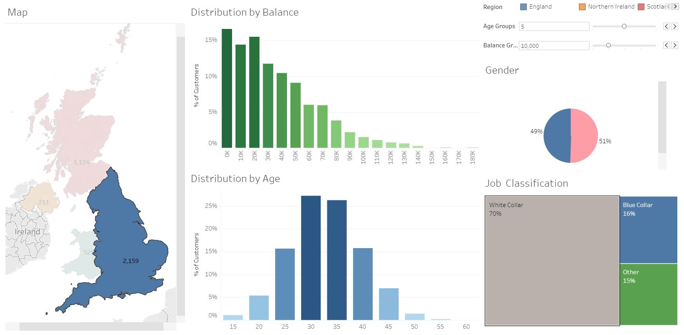

Tableau Project 1: UK Bank
This dashboard represents a customer segmentation analysis for the UK Bank, a fictional entity that operates in England, Wales, Northern Ireland, and Scotland. The components of the interactive dashboard go as follows:
- A map that shows the total amount of clients by region
- A pie chart to divide the clients by gender
- A bar chart to show the distribution of clients by age that belong to 5y bands
- A bar chart to provide the percentage of customers that belong to 10k balance bands
- A treemap to display the percentage per job classification
Here goes the customer baseline. Most clients are in England, followed by Scotland, Wales and Northern Ireland. In terms of the balance, the lower the balance band the more clients we may find, as 45% of the clients sit under 30k. In terms of age, most clients are in their 30s, as early and late 30s sum up to 40%. Moreover, the mean sits at around 35y and the distribution seems to be right skewed. Age does not show a significant difference in this aggregated view. However, job classification shows that about 50% of workers are white collar, and blue collar and other are evenly represented:
England is mostly represented by white collar workers (70%), as London is the economic centre of the UK. Here the age distribution is no longer right skewed, which means that the clients that are in their later age groups might not be in England:
Customers in Scotland are predominantly males in their late 40s and early 50s. Representation of white collar workers is low. Here the gender breakdown changes from the baseline as 72% of workers are male and the white collar workers almost disappear. In terms of age, clients are between their late 40s and early 50s:
Data for Wales shows an above average representation of mid-sized balances, which is not consistent to the overall baseline. The gender split shifts compared to the baseline, and white collar workers increase by 10%:
Northern Ireland is mostly represented by female customers in younger age groups. Here 74% of the clients are female, and most of them are in their late 20s to early 30s, as opposed to the baseline. White collar percentage drops to 31%, and other category goes up to 50%: